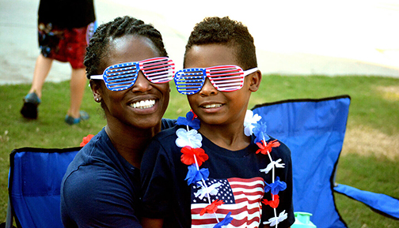
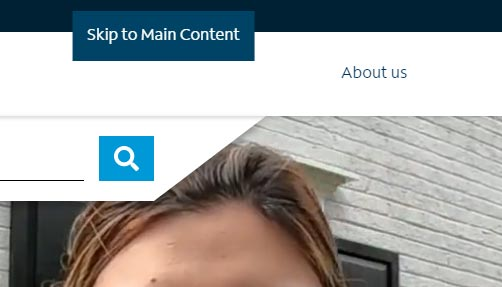

Web pages must always be validated. Errors presented in WAVE and the W3C (World Wide Web Consortium) Validator are the most critical issues to address. Accessibility and QA (Quality Assurance) engineers should link directly to validation reports when logging issues.
Have you tested your page in Axe? All developers should have the Axe devTools extension installed and should be using it regularly, during development, to address any critical and serious accessibility issues.
Provide text alternatives for non-text content. Typically, this involves multimedia (audio, images, video), and interactive components (buttons, controls, inputs). Understanding 1.1.1
Images
Know the Difference
Images fall into one of two categories: Decorative and Informative. It is very important to understand the difference between these two image types in order to make a more informed decision on whether to include an alternative text value or not.
Decorative: Images of an unimportant nature. For example, icons or other visual embellishments. If a page can be understood without these images, then an alternative text value is not required.
Informative: Images of an important nature. These are often images that provide value to the surrounding content. If a page can't be understood or experienced in a similar way to the visual experience, without these images, then an alternative text value is required.
Basic Rules
All images require an alt attribute, whether they are informative or decorative. For example: <img alt="" src="...">. An image with an alt attribute that has no value, is known as a "null alt".
If image is informative or contextually important to surrounding content, then it must include an alternative text value.
If image is meant to invoke a feeling or emotion, then it should contain an alternative text value.
If image contains text, then it must include an alternative text value. Typically verbatim, to match what is embedded in the image.
If image is purely decorative, then it requires no alternative text value.
If image is contained within an interactive element (e.g., a hyperlink or button), then it must contain functional alternative text. For example: <a href="..."><img alt="My Awesome Vacation (Video)" src="..."></a>.
If image within interactive element also contains text, then the previous rule can be ignored. For example: <a href="..."><img alt="" src="..."> <span>My Awesome Vacation</span></a>
In all cases where an alternative text description is deemed necessary, avoid phrases like "Image of ..." or "Picture of ..." as these are redundant to assistive technology (AT) users.
If image is deemed informative and is found to be a background image, alternative techniques should be taken to ensure that this information is conveyed to AT users. For example, instead of using CSS to implement an image, use an inline image instead.
Testing
Review images and ensure that the aforementioned rules are met. You can run the following tests to review page images in more depth:
Alternative text should be written in a descriptive, yet succinct manner. Think of how you might describe an image to a friend who is blind. For example:

A little boy sitting on his mother's lap. Both are smiling and wearing American paraphernalia.
Note: Unless it is relevant to the image, intentionally including keywords in alternative text descriptions, for the sole benefit of SEO (Search Engine Optimization), is strongly discouraged. Websites are for people; not machines.
Components and Multimedia
Basic Rules
All interactive components (e.g., buttons, controls, hyperlinks, inputs), must have an accessible name. If text is not explicit in the design of such components, then you may use various methods to provide this information. For example, if a menu or search button has no visual label, you might need to do the following to better describe the control: <button aria-label="Menu"></button>
Multimedia is identified via accessible text. For example: <video src="..." title="My Summer Vacation">...</video>
Inline frames (iframe) are appropriately titled and describe contents of the frame. For example: <iframe src="..." title="Job Application Form">...</iframe>.
Testing
Review page components and ensure that the aforementioned rules are met. You can run the following tests to review components in more depth:
- Is ARIA being implemented on the page? Is it used correctly? Do accessible names and descriptions make sense?
- Is form markup correct? Is labeling present and correctly associated with its input field?
- Do iframe's have an accessible name? Does the name make sense?
Resources
Not sure if an image should contain alternative text? Check out An alt Decision Tree
Video on a page should be manually reviewed. If the video includes dialogue or important information, then it must contain captions .
Caption accuracy is also critical. If a video is found to have inaccurate captions, new captions must be produced. See Creating Accessible Multimedia.
Note: While not a failure here, providing transcripts with video and audio content is becoming a necessity and strongly encouraged. Including them would pass 1.2.1 Prerecorded Audio-only and Video-only, which is not currently included in our baselines, but will be eventually.
Semantic markup is used appropriately. Logical structure, etc. Understanding 1.3.1
Testing
In addition to validating your page, HTML should be structured and labeled accordingly, so that is makes sense to everybody. Some of the tests below will offer deeper insight into the implementation of the page markup.
- Is ARIA being implemented on the page? Is it used correctly? Do accessible names and descriptions make sense?
- Is form markup correct? Is labeling present and correctly associated with its input field?
Headings - Does the page have headings? Are they ordered and nested properly?
- Do iframe's have an accessible name? Does the name make sense?
- Are page landmarks being used? Do they have an accessible name? Are there too many page landmarks?
- Does the page contain a lang attribute on the html element? Is the page multilingual? If so, additional lang attributes should be included where the page shifts into a different language.
- Are lists present? Is the markup correct and nested properly?
- Are tables present? Are they used for layout purposes?
- Is the title attribute present? This attribute should only be used in the rarest of circumstances, like providing an accessible name to an iframe.
Manually ensure that color is not used as the sole method of conveying content or distinguishing visual elements. For example, saying "Please correct all text highlighted in red", would be a failure.
For better usability, links should be underlined by default. Otherwise, link text must:
Have a 3:1 contrast ratio with surrounding body text, and must present a visual indicator (typically an underline) when hovering over or receiving focus.
Both link and body text must have a 4.5:1 contrast ratio with the background (3:1 for large text).
Links in the header and footer are typically understood to be a link, so the above rules may not apply.
In addition to testing specific color contrast ratios, pages should always be reviewed under various color-blindness or low vision simulations. Any concerns should be flagged with your team and added to your report.
Overview
Contrast ratio between text and background is at least 4.5:1. Understanding 1.4.3
Testing
Review page and test any text or images of text that you suspect may fail this guideline. Running the WAVE validator may also be helpful.
Large Text: Large text and images of large text have a contrast ratio of at least 3:1. Note: In WCAG, points are often referred to as the unit of measure in determining the size between regular and large text. However, pixels are much more common on the web. 18pt maps to 24px and 14pt to approximately 18.67px. In CSS, bold text typically has font-weight: bold, or font-weight: 700 or greater.
Incidental: Text or images of text that are part of an inactive user interface component (i.e., disabled button), that are pure decoration, that are not visible to anyone, or that are part of a picture that contains significant other visual content, have no contrast requirement.
Logotypes: Text that is part of a logo or brand name has no contrast requirement.
In addition to testing specific color contrast ratios, pages should always be reviewed under various color-blindness or low vision simulations. Any concerns should be flagged with DPM or added to your report.
Overview
Text can be resized to 200% without loss of content or function. Understanding 1.4.4
Testing
Use Control (PC) or Command (Mac) and + keys to increase zoom level of browser viewport. When 200% is reached, test to see if all page content can still be accessed and that site continues to be fully operable.
Overview
Ensure important visual components, such as images, icons, and buttons, have a contrast ratio of at least 3:1. Understanding 1.4.11
Testing
Ensure that the visual presentation of the following have a contrast ratio of at least 3:1 against adjacent color(s):
User Interface (UI) Components: Visual information required to identify user interface components and states, except for inactive components or where the appearance of the component is determined by the browser.
Graphical Objects: Parts of graphics required to understand the content, except when a particular presentation of graphics is essential to the information being conveyed.
Review page and test any UI components or images that you suspect may fail this guideline. Running the WAVE validator may also be helpful.
In addition to testing specific color contrast ratios, pages should always be reviewed under various color-blindness or low vision simulations. Any concerns should be flagged with DPM or added to your report.
Using your Tab key, navigate through the page and engage with interactive components. Anything that can be used with a pointing device, such as a mouse, must be equally usable via keyboard.
Anything that receives focus must have an accessible name.
Ensure that interactive components on the page work when accessed with Enter key. Buttons will be expected to work with both the Enter and Spacebar keys.
See where focus is brought when certain components are engaged with. For example, what happens when a button is accessed and a modal window is shown? Will continuing to tab take you behind the modal, or keep you within the modal itself?
Does keyboard focus become trapped within any portion of the interface while tabbing? While this is acceptable behavior in modal windows, in other scenarios it could be an indication of a keyboard trap.
Non-interactive elements, such as a div, should not receive keyboard focus while tabbing.
Note: If focus outlines have been suppressed (which is also a failure), you can on the page to see where you are navigating.
Accessibility Tip
Buttons do things; hyperlinks navigate.
The difference between using a hyperlink and a button can have a very big impact on accessibility. By using the correct element for the job, we can set the right expectation for AT users and make our code much easier to write. Be sure to read Pushing Buttons for more details on why this distinction is critical.
Manually check to see if the page contains automatically moving content, such as a carousel or video. If such features have no mechanism to pause them, then this is a failure.
Accessibility Tip
Unless there is continuous movement, web (a.k.a micro) animations are typically exempt from this rule, but it is strongly recommended that development leverage prefers-reduced-motion in their work to avoid creating an unpleasant experience for those who may find animation problematic.
A high rate of flashing can cause potential harm, or even death, in individuals with epilepsy. If you suspect that an element on a page may be harmful, you can download and install PEAT (Photosensitive Epilepsy Analysis Tool) to see if there is any risk or reach out to the Accessibility Team to perform this test.
Note: Any failures should be immediately brought to the attention of Michael Spellacy.
Areas of a web page that may be cumbersome to navigate through via keyboard or assistive technology, must provide a mechanism to skip over that content. These "Skip" links should be available to all users when needed and not obscure other content on the page when visible. You will often find these links placed before a websites primary navigation, but they can be useful elsewhere. If it takes you a long time to tab through a certain portion of the interface, then this may be a good indication that a skip link is necessary.

An example of a "Skip" link. These links, when present, will display when keyboard testing is performed. If it perfectly normal for the mechanism to be present for all user types.
Ensure that all pages have a title and that it is useful and adequately describes the page at hand:
(Alert dialog will appear.)
Overview
The navigation order of links, form elements, etc. is logical and intuitive. Understanding 2.4.3
Testing
Navigate through the page using the Tab key on your keyboard, while being mindful of the focus order. Tab stops that are not in a fairly logical visual order should be considered a failure. You can view the focus order with the following tool:
An interactive element with a tabindex other than 0 will interfere with a pages natural tab order and should be considered a failure. A tabindex with -1 will not interfere with tabbing. You can view tabindexs with the following tool:
Note: If focus outlines have been suppressed (which is also a failure), you can on the page to see where you are navigating.
Overview
Ensure keyboard focus is visible and clear. Default focus outlines are a browser feature meant to aid those with low vision, and should never be removed without an adequate replacement. If default focus outlines are undesirable, they may be redesigned or an alternative focus state can be used. However, any redesigned outline or alternative focus state must then meet a 3:1 contrast ratio. Understanding 2.4.7
Testing
Using your Tab key, navigate through the page and review all focus states of interactive elements. If focus state is missing or an alternative and adequate focus state is not provided, then this is a failure.
Again, any redesigned focus state must meet a 3:1 contrast ratio. You can run to test your foreground and background color of the alternative outline or state.
Non-interactive elements should not contain a focus state. The only exception to this rule is if the non-interactive element is accepting temporary focus via tabindex="-1".
Ensure that each element has an accessible name, role, value, state and property which can be properly conveyed to AT users. Using the correct HTML is the first step in creating a more robust UI. For example, one should not use a div element to create a button, but a button element instead! Using the right elements for the job has built in advantages that help convey additional information that allow disabled users to better understrand the component they are engaging with.
Testing
The usual suite of tests can be run to take a deep into the code.
- Is ARIA being implemented on the page? Is it used correctly? Do accessible names and descriptions make sense?
- Is form markup correct? Is labeling present and correctly associated with its input field?
Headings - Does the page have headings? Are they ordered and nested properly?
- Do iframe's have an accessible name? Does the name make sense?
- Are page landmarks being used? Do they have an accessible name? Are there too many page landmarks?
- Does the page contain a lang attribute on the html element? Is the page multilingual? If so, additional lang attributes should be included where the page shifts into a different language.
- Are lists present? Is the markup correct and nested properly?
- Are tables present? Are they used for layout purposes?
- Is the title attribute present? This attribute should only be used in the rarest of circumstances, like providing an accessible name to an iframe.